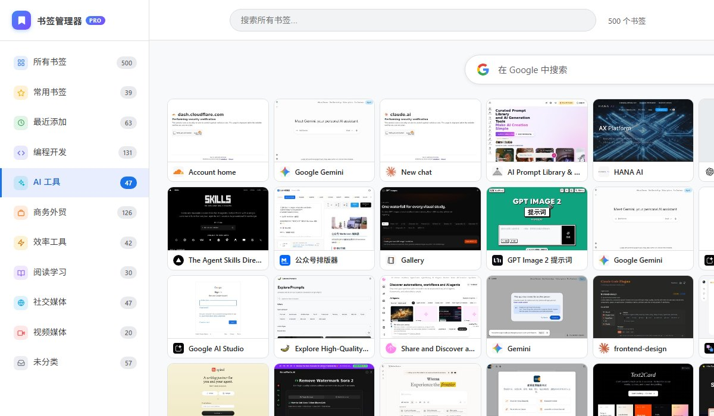
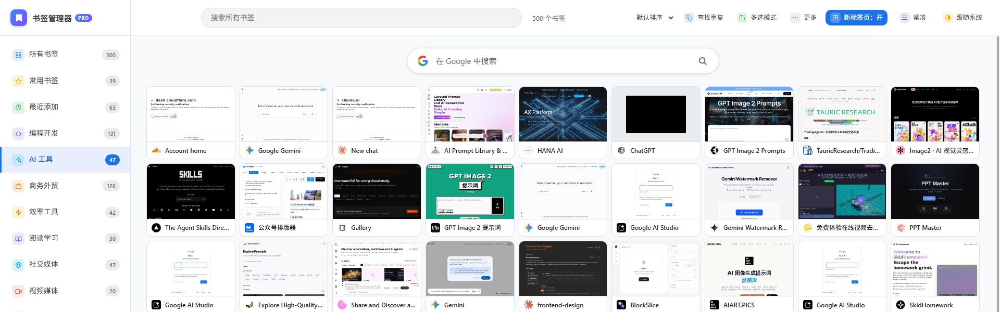

01 · 弹窗
点开就是搜索框，没有多余的东西
弹窗只做最高频的四件事：搜索、一键到顶、一键到底、最近添加优先。点开光标已经在搜索框里，敲关键词、回车，第一个结果直接打开。找一个书签，全程不用碰鼠标。
- 悬停任意书签，一键「置顶」到列表最前
- 拖拽排序；右键打开、编辑、删除
CHROME 扩展 · 免费
Chrome 的书签菜单不能搜索，新存的永远沉在最底下。装上它：关键词直接搜、自动分类、失效重复一键清掉。

点一下工具栏图标，输入关键词，回车打开：标题、网址、文件夹一起检索，命中高亮。这就是这个扩展存在的第一理由：找任何书签，三秒结束。
↑ 可以直接打字试试 · ↑↓ 选择 · 回车打开
没有搜索框：几百个书签，只能靠眼睛一行行扫
新存的书签永远在最底下，偏偏刚存的才是最常用的
下拉菜单连滚动条都没有：全靠鼠标滚轮一点点往下蹭
这不是大厂产品：它是一个每天要在几百个书签里找东西的外贸人，被 Chrome 逼出来的作品。所以每个功能都来自真实的抓狂瞬间，而不是产品会议。
我们特意没有另做「添加书签」：收藏还是点地址栏那颗你用了多年的星星。它直接读写 Chrome 自己的书签系统，相当于给系统书签加了个更好用的壳：不迁移、不学习、装上即会用。
弹窗管最高频的四件事，导航页管整理和体检。
弹窗只做最高频的四件事：搜索、一键到顶、一键到底、最近添加优先。点开光标已经在搜索框里，敲关键词、回车，第一个结果直接打开。找一个书签，全程不用碰鼠标。
按域名和关键词自动把书签归入设计、编程、AI、商务等 8 个分类，不用建文件夹，不用拖拽。分错了？右键手动指定一次，它永久记住。
滚动到哪，哪里的书签就按需生成网页截图并缓存在本机。标题记不清没关系，扫一眼就知道是哪个网站。
一键体检当前列表：真正 404 的标「失效」，只是响应慢的标「超时」；批量清理只删确认失效的，绝不误伤慢网站。
多选模式下点选、Shift 圈选一整段，然后一次性移动、归类或删除。重复收藏的同一个网页？「一键清理重复」每组只留最新的。
别的工具删书签前弹窗问你「确定吗」，删完就真没了。这里反过来：直接删，但任何删除（包括批量删除几十个）都能一键撤销，书签回到原来的文件夹原来的位置。
新标签页不再是一片空白：书签导航加上正中间的网页搜索栏（用你自己的默认搜索引擎），查资料、开常用网站，都从这一页出发。不喜欢？顶栏一键关掉。

免费 · 无需注册 · 30 秒装好
书签由 Chrome 管理；分类和界面偏好保存在本地。我们没有后端服务器，无法读取这些数据。
不用注册，没有统计脚本，没有广告 SDK。装上就用，卸载即净。
截图由第三方服务生成（会把书签网址发给它）。顶栏「预览：关」一键停用，卡片变纯文字，不再发出任何外部请求。
不会。它直接读写 Chrome 自带的书签，不做迁移、不建副本。你在这里做的整理（移动、删除、排序）就是对 Chrome 书签本身的操作，随 Chrome 账号正常同步；智能分类只是展示层，不改变你的文件夹结构。添加新书签也照旧：点地址栏的 ★ 星标就行，两边实时互通。
开发者没有后端服务器，书签和分类不会上传给我们。唯一的外部请求是生成网页预览截图（把书签网址发给截图服务），在导航页顶栏点「预览：关」即可停用。
右键书签 →「移动到分类」手动指定即可，手动分类永久生效、优先于自动规则。也可以多选后批量设置分类。
能。所有删除操作（包括批量删除、清理重复、清理失效链接）完成后都会出现「撤销」按钮，点击即原位恢复，手动分类一起还原。
完全免费。为 Chrome 设计，商店页面上线后，Edge 等 Chromium 内核浏览器通常也能安装使用。界面支持中文和英文，跟随浏览器语言自动切换。
不会。5 万个书签实测，每按一个键 20 毫秒内出结果；预览图只在接近可视区域时按需加载并缓存。
会，默认开启：打开新标签页直接看到书签导航和网页搜索栏。不想要的话，在导航页顶栏点「新标签页：关」即可，之后新标签页会打开你在 Chrome 里设置的默认搜索引擎的首页。（Chrome 的限制：扩展接管新标签页后，无法再显示 Chrome 原生新标签页。）